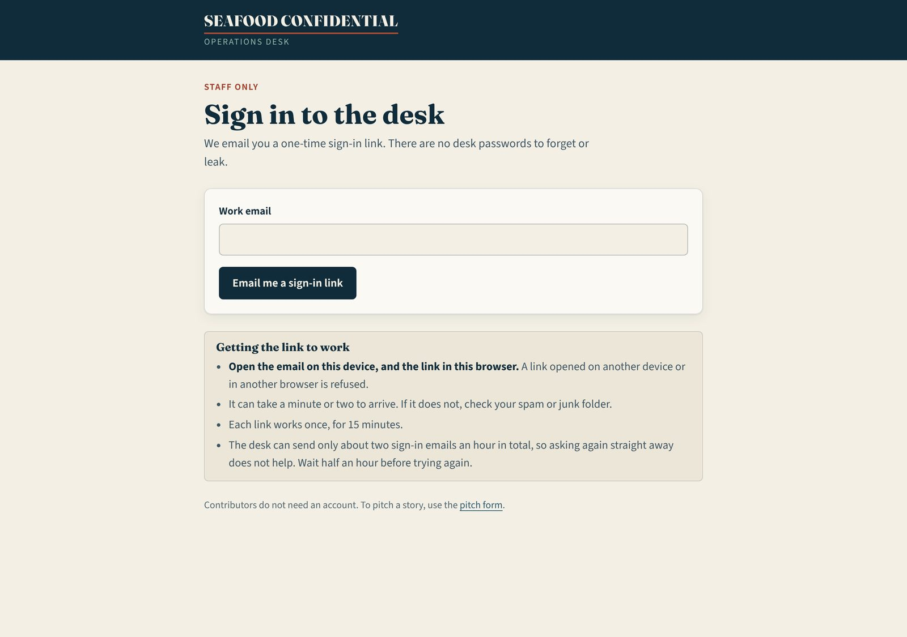
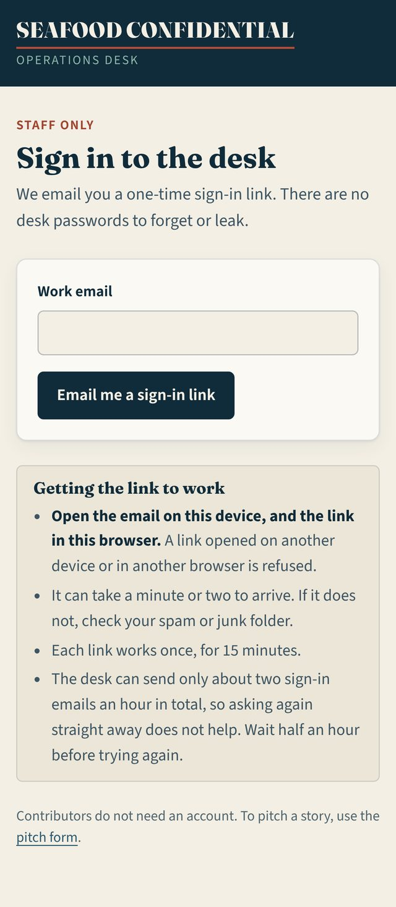

| Entry | DL-20261119-02 |
|---|---|
| Session | S01, turn 10 |
| Version | 0.7.4 |
| Branch | claude/intelligent-cannon-d1nqq6 |
| Base commit | 9f405193e59a |
| Started | Nov 19, 2026, 11:40 AM EST |
| Recorded | Nov 19, 2026, 11:55 AM EST |
| Tickets | SC-005 |
| Workstreams | WS-ENV |
| Status | complete |
Sign-in guidance, a custom SMTP plan and owner security
Summary
Paul invited Dave and asked what else could improve this.
Dave's status. He has accepted, as an Owner of the Supabase organization, but has not signed in to the desk yet.
Two findings:
- The sign-in link trap. The built-in mailer's sign-in link works only in the browser that asked for it, and the free plan does not let us change the template.
- No two-factor authentication. Neither owner's Supabase account has it.
What changed:
- The sign-in page now warns up front (v0.7.4, live): open the email on the same device and browser, check spam, each link lasts 15 minutes, and there is an hourly limit. Before, it said so only after a link had failed.
- The launch guide has the custom SMTP plan. That is the change that removes all four mailer limits: membership, volume, browser-bound links and sender.
- Two-factor authentication is now a founders' security follow-up.
What changed
- Desk (v0.7.4):
- A "Getting the link to work" panel under the sign-in form.
- The "link on its way" message now says "Open it in this browser within 15 minutes".
- A new setting,
DESK_AUTH_EMAIL(builtinby default, orcustom). Withcustom, which means custom SMTP and our template whose links work anywhere, the browser and hourly-limit lines disappear. - Styled from the desk's tokens. The end-to-end sign-in test checks the panel and the message.
- Docs:
docs/LAUNCH_PREVIEW.md, "Custom SMTP: what it fixes and how": the four limits; the founders' steps with Resend (sending address, DNS records, Supabase SMTP settings); and what the agent session does next: the template, the rate limit,DESK_AUTH_EMAIL=custom, and a test sign-in.- A security follow-up for two-factor authentication on both owners' Supabase and Google accounts.
docs/DEPLOYMENT.mdand.env.exampledocument the new setting.
- Live: the desk runs v0.7.4 on revision
sc-desk-00008-gw2.
Decisions
- Warn up front, not after a failure. Dave's first try is the one that matters. Opening the email on a phone after asking on a laptop is the most likely mistake, and the old page mentioned it only once a link had already failed.
- Make the warning depend on the mailer, not hard-coded. When custom SMTP arrives, one setting turns the browser and hourly-limit lines off, so the page never tells people something untrue.
- Recommend, do not change, the founders' account security. Two-factor authentication is set by each person on their own Supabase and Google accounts. The Free plan cannot require it for the organization.
- Custom SMTP needs the founders' choices: a sending domain and an email-provider account. The guide asks only for those, and the session does the rest.
Problems and resolutions
- The Docker daemon had stopped again while the session was paused, so the first end-to-end run could not reach the local database. It was restarted and the run passed (33/33). This keeps happening whenever the session sleeps; any session that resumes should check Docker before the end-to-end tests.
Evidence
- EV-0077 (observation):
- Dave is an organization Owner, with no desk sign-in yet.
- Both owners lack two-factor authentication.
- The built-in template cannot change.
- Requiring two-factor authentication for the whole organization needs a paid plan.
- EV-0078:
pnpm check(Vitest 132/132), the build and bundle scan, and Playwright 33/33. - EV-0079: desk v0.7.4 is live, and the sign-in page shows the guidance, with 0 axe violations and no overflow on desktop and an iPhone 13.


Risks and open questions
- Dave holds full control of the infrastructure as a Supabase Owner, and so does Paul, both without two-factor authentication. That is the biggest security gap today.
- Until custom SMTP is in place, every new staff member needs a Supabase account and organization membership. Two people share about two sign-in emails an hour.
Next actions
- Dave: sign in at the desk, opening the email on the same device and browser. Settings, under Staff, will show it.
- Paul and Dave: turn on two-factor authentication on your Supabase accounts (and the Google accounts that own the Cloud project), and save the recovery codes.
- Founders: choose a sending domain and create a Resend account, following "Custom SMTP: what it fixes and how" in the launch guide. Then the session does the rest.
- After SMTP: an "Add a staff member" screen, so owners add people without an operator.
Evidence referenced
| ID | Result | Summary | Observed |
|---|---|---|---|
| EV-0077 | info | Dave accepted the Supabase invitation as an Owner; he has not signed in to the desk yet; neither owner's Supabase account has two-factor authentication | Organization members: 2, both Owner, both mfa_enabled false. Dave: no sign-in yet. Built-in mailer: the template uses the default confirmation link, which opens only in the requesting browser, and it cannot be changed without custom SMTP. Supabase: each user turns MFA on in account settings; requiring it for an organization needs Pro, Team or Enterprise |
| EV-0078 | pass | v0.7.4 tree: pnpm check (Vitest 132/132), desk build and bundle scan, Playwright 33/33 including the sign-in guidance | All exit 0. The sign-in test checks the 'Getting the link to work' region (same device and browser; spam), the message 'Open it in this browser', and still finds 0 axe violations |
| EV-0079 | pass | Live: desk v0.7.4 on revision sc-desk-00008-gw2; the sign-in page shows the guidance, with 0 axe violations and no overflow on desktop and an iPhone 13 | Health {version: 0.7.4}. The page carries 'Getting the link to work', the same-device-and-browser line and the hourly-limit line (DESK_AUTH_EMAIL defaults to builtin). Desktop and iPhone: 0 axe violations, no horizontal overflow |